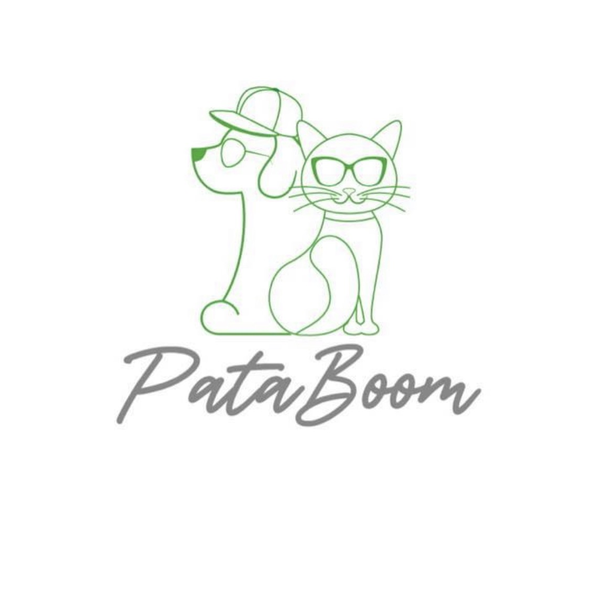

Guadalupe Solano CV
I am a Profesional Sales Person with 3 Years of experience in the Pharmaceutical Industry providing Quality Solutions to the Healthcare Industry who is currently looking forward to expand her knowlege in digital technologies.
Email: lupsolano21@gmail.com
Know more
Experience
PQE GROUP (Pharma Consulting Company) •
Business Development Executive & Sales Area Manager LATAM
February 2022 Present • CDMX, Mexico (Full Time)
Help BD & Sales team to negotiate, build productive working relationships and increase sales with existing and
potential clients for the Pharmaceutical, Medical Device, Healthcare Industries
Communicate to Top Management every month current market status to successfully develop and execute strategies to
improve sales in the following months
Define metrics KPIs and sales plan management to analyse sales team results and improve monthly, quarterly and
annually
Create regional initiatives and engage with Top Clients to acquire a deeper understanding of their current needs
and offer competitive solutions
Develop strategic relationships with corporate managers and decision makers to target regional markets by
generating partnerships and providing added value
Train and develop new talent to achieve corporate results
Increase revenue from strategic clients around 30% to 50% yearly

PataBoom CDMX (Petshop)• Owner
October 2020 Present
Carry out a market study to determine which products to sale online
Develop seasonally online campaigns to increase sales of specific season related product
Promote through social media different products to find potential customers and meet their needs and expectations
Education
University of Aberdeen, Aberdeen, UK January 2019- January2020
MSc Oil and Gas Chemistry (Commendation)
Instituto Politécnico Nacional, Mexico City, Mexico August 2012-May 2016
BSc (Hons) Chemical Industrial Engineering
Skills
Communication
- Capable of communicating ideas through different levels
- Sales Strategy development according to Company targets
- Continuous improvement within Sales processes to increase sales
- New market development
IT
- SQL for Data Analysis
- Microsoft Office
- Hubspot
Teamwork
Communicate with different areas to create a multidisciplinary team to have better results for the company
Hobbies
| Sports |
Watch |
Play |
| Cycling |
Movies |
Xbox |
| Weight Lifting |
TV Shows |
Switch |